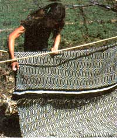

Several years ago, a friend from the States was visiting us in Mexico - where my husband and I homestead - when I mentioned that I was going to hang a hammock outside under the trees for the baby. Eyeing the rope and the blanket in my hands with a puzzled expression, she asked, "How on earth are you going to make a hammock with just a blanket?" "Easy," I replied. "I'll show you." And in moments it was ready.
Making a swinging bed out of a rope and a blanket is a neat trick I picked up over a decade ago from Mexican Indian women. I've used it countless times over the years to rock our three children to sleep, just as mothers south of the border have been doing for centuries. The procedure is simple, and the only materials you need are a regular-size blanket and - in most situations - about 24 feet of rope. The exact length of rope required will, of course, depend on the distance between the points from which you're going to hang the hammock. I've suspended Indian swings from a couple of close-set trees, from a single horizontal beam, and even from two pieces of angle iron hammered into adjacent adobe walls in our bedroom. As for the blanket, its width will determine the length of the finished hammock, so the only problem I've encoun tered in making an adult's hammock is finding a blanket that's wide enough.
Once you've selected a place to hang the hammock, double your rope end to end and tie it in place so that the twin cables droop in a gentle curve. Now fold a short side of the cover over one of the ropes so that a little more than a fourth-but less than a third-of the blanket is hanging between the ropes. Pull the rest of the blanket under both ropes and fold the other side over the second rope, toward the center. The two ends of the blanket should overlap each other by at least several inches. That's all there is to it. When you lie in the hammock, your own weight on top of the blanket's overlapped ends keeps the whole thing from slipping apart and dumping you on the ground. Surprisingly enough, the arrangement is completely sturdy. [EDITOR'S NOTE. Since the hammock can be undone, we suggest that you do not use this arrangement for your child until you have tested it thoroughly for safety.] Once you get the hang of it, you should need less time to make up the hammock than it takes to read this explanation'
After you've put your hammock together, you may find that you'd prefer it wider and less deep. In that case, just add a stick at each end of the blanket to keep the ropes spread apart. The pressure will hold them in place without any kind of fastening.
Like many native designs, this one is so simple that you can hardly believe it works ... but it does, and it has served the Indians for hundreds of years. Don't fret if you can't afford the time or money to weave, sew, or buy a hammock this summer: just get a blanket and some rope, and fold one!
|
 Karen New de Franco |
Karen New de Franco |
|